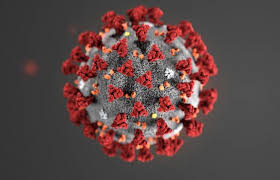

Залишайтеся вдома!
|
|||
Система моніторингу поширення епідемії коронавірусу |
Лікування |
Головна сторінка Історія виникнення Симптоми коронавіруса Самоізоляція Лікування |
|
СамолікуванняУ разі поганого самопочуття просто відпочивайте, пийте багато рідини та їжте поживні страви. Якщо можливо, залишайтеся в окремій кімнаті без інших членів родини та користуйтеся окремим санвузлом. Мийте та дезінфікуйте поверхні, яких часто торкаєтеся. Перебуваючи вдома, ведіть здоровий спосіб життя. Правильно харчуйтеся, добре висипайтеся, будьте активними й спілкуйтеся з близькими телефоном або через Інтернет. У складні часи діти особливо потребують любові та уваги дорослих. Намагайтесь дотримуватися звичного розпорядку дня. Під час кризи цілком нормально відчувати смуток, стрес або розгубленість. Вам може полегшати, якщо ви поговорите з тими, кому довіряєте, як-от із друзями й рідними. Якщо впоратися з негативними емоціями самостійно не вдається, зверніться до медичного працівника або психолога. Медичні послугиЯкщо у вас виникли легкі симптоми COVID-19 і немає супутніх захворювань, дотримуйтесь режиму самоізоляції та зателефонуйте своєму лікареві або в інформаційну службу COVID-19, щоб отримати консультацію. Якщо у вас з’явилися лихоманка, кашель і вам важко дихати, зверніться до лікаря. Спершу зателефонуйте. |
|||
«Життя довге, якщо ним вміло користуватись.» |
|||
|
15-45 Урядова гаряча лінія 0 800 505 201 Гаряча лінія МОЗ 0 800 505 840 Гаряча лінія ЦГЗ 16-77 Довідкова служба НСЗУ
|
|||